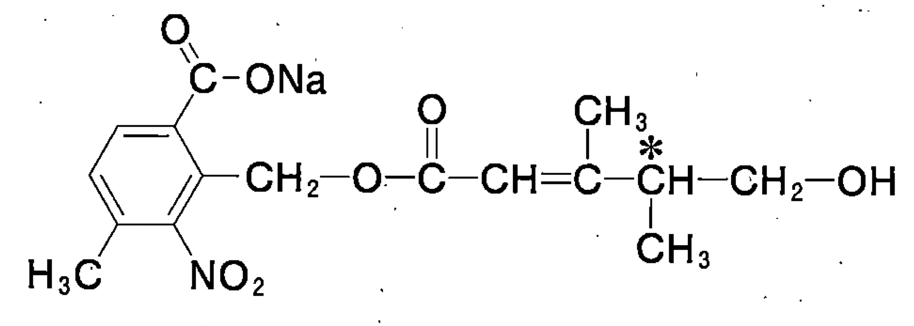
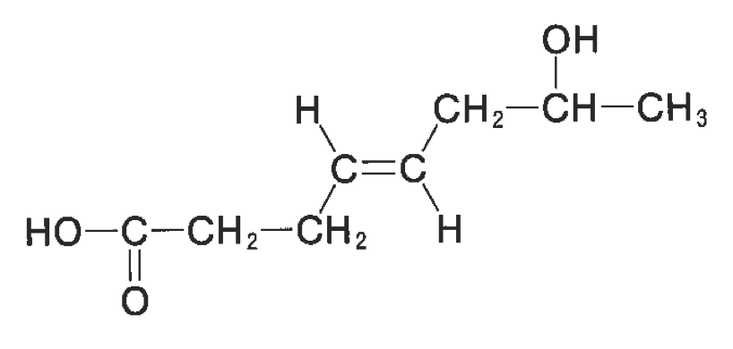
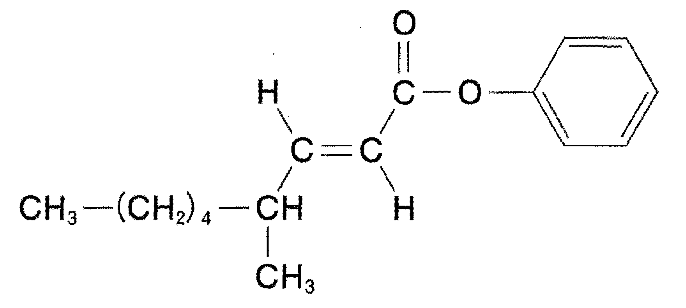

参照画像と作図比較
参照2を基準に、文字高約33pxの生成図と比較。参照1・3は同程度の文字高へ縮小。



acetone
acetic-acid
ethyl-acetate
2-butanol
glycerol
2-methyl-2-propanol
fumaric-acid
maleic-acid
全31種
メタノール
エタノール
1-プロパノール
2-プロパノール
2-ブタノール
エチレングリコール
グリセリン
ジメチルエーテル
ジエチルエーテル
アセトン
エチルメチルケトン
ホルムアルデヒド
アセトアルデヒド
プロピオンアルデヒド
ギ酸
酢酸
プロピオン酸
乳酸
フマル酸
マレイン酸
ギ酸メチル
酢酸メチル
酢酸エチル
無水酢酸
ヨードホルム
パルミチン酸
ステアリン酸
シュウ酸
2-メチル-2-プロパノール
1-ブタノール
酪酸